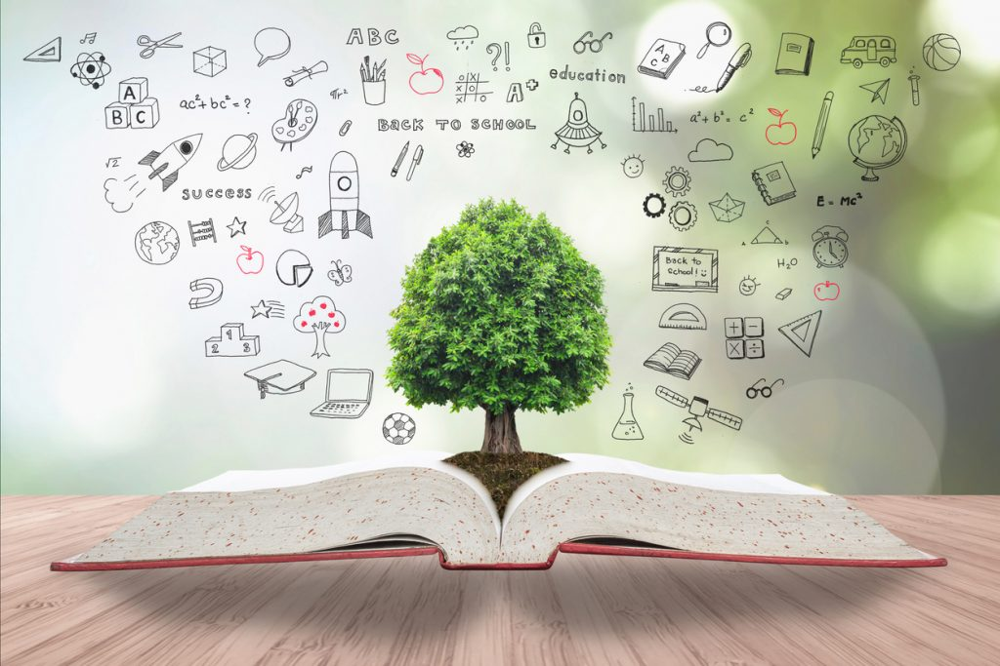

A educação ambiental é a base para a transformação. Aprender sobre o meio ambiente, entender os impactos das ações humanas e refletir sobre o nosso papel na proteção do planeta são passos essenciais para enfrentar a crise climática.
Nesta página, você encontrará informações simples, diretas e atualizadas para ampliar sua consciência ecológica e agir com responsabilidade.
A crise climática é o resultado do aquecimento global causado pelo excesso de gases do efeito estufa lançados na atmosfera, principalmente pela queima de combustíveis fósseis (carros, fábricas, desmatamento, etc).
Consequências:
Importante: A crise climática não é um problema do futuro — ela já está acontecendo e afeta milhões de pessoas hoje.
São gases que retêm o calor na atmosfera. Alguns deles são:
Fontes principais: indústrias, agropecuária, desmatamento, carros.
Curiosidade: O CO₂ pode durar mais de 100 anos na atmosfera.
Cada pessoa tem uma pegada ecológica, que representa o quanto suas ações impactam os recursos naturais.
Educar é o primeiro passo para agir. Ao aprender sobre a crise climática, você se torna parte da solução. Compartilhe esse conteúdo com amigos, familiares e colegas. Espalhar a consciência é multiplicar o impacto positivo.
"Educar para transformar. Agir para preservar."